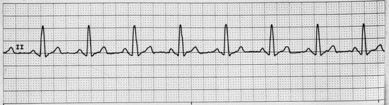

RHYTHM 01
Normal Sinus Rhythm

👁 What gives it away?
Regular + normal rate + one P before every QRS. Everything is conducting in the expected sequence.
See
Rate 60–100, regular rhythm, P before every QRS.
ThinkNormal SA-node conduction.
DoNo rhythm-specific emergency intervention.